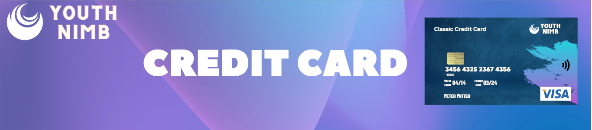

Credit Card
Credit cards are also widely used in Nepal for financial transactions such as making purchases, paying bills, and booking flights and hotels online. They are issued by various banks and financial institutions and can be used both locally and internationally.
both locally and internationally.
To obtain a credit card in Nepal, one must have a steady source of income and a good credit score. The application process involves :max_bytes(150000):strip_icc()/credit-cards-Adam-Gault-OJO-ImagesGetty-Images-56a906ee3df78cf772a2f137.jpg) filling out an application form and submitting it along with necessary documents such as citizenship certificate, passport-size photographs, and proof of income. The bank or financial institution will then evaluate the application and may conduct a credit check before approving or rejecting the application.
filling out an application form and submitting it along with necessary documents such as citizenship certificate, passport-size photographs, and proof of income. The bank or financial institution will then evaluate the application and may conduct a credit check before approving or rejecting the application.
Once the credit card is approved, the user can activate it by setting up a PIN (Personal Identification Number) and can start using it to make purchases or withdraw cash from ATMs. The user must also make timely payments of the credit card bills to avoid accumulating interest and penalties.
It is important to note that the use of credit cards in Nepal is subject to certain fees and charges such as annual fees, interest rates, and late payment fees. It is advisable to check with the issuing bank or financial institution regarding these charges before using the card for any transaction.
interest rates, and late payment fees. It is advisable to check with the issuing bank or financial institution regarding these charges before using the card for any transaction.
Overall, credit cards in Nepal can be a convenient and flexible way of making transactions, but it is important to use them responsibly and make timely payments to avoid any negative impact on one's credit score.